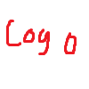

Options
Select Region
Acrithia
Allod's Bight
Ash Fields
Basin Sionnach
Callahan's Passage
Callum's Cape
Clanshead Valley
The Deadlands
The Drowned Vale
Endless Shore
Farranac Coast
The Fingers
Fisherman's Row
Godcrofts
Great March
The Heartlands
Howl County
Kalokai
The Linn of Mercy
Loch Mór
Marban Hollow
The Moors
Morgen's Crossing
Nevish Line
The Oarbreaker Isles
Origin
Reaching Trail
Red River
Shackled Chasm
Speaking Woods
Stonecradle
Tempest Island
Terminus
Umbral Wildwood
Viper Pit
Weathered Expanse
Westgate
Place Artillery
Place Target
Place Spotter
Wind direction
Wind strength